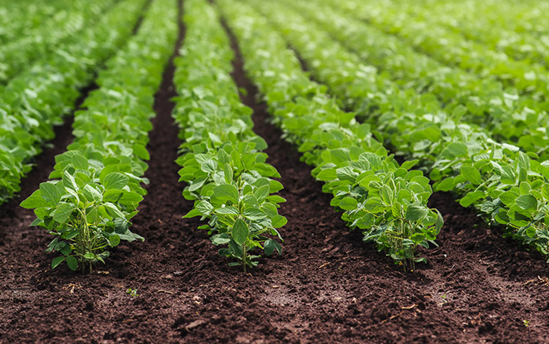
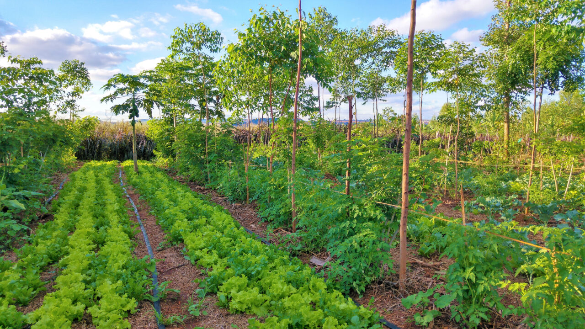
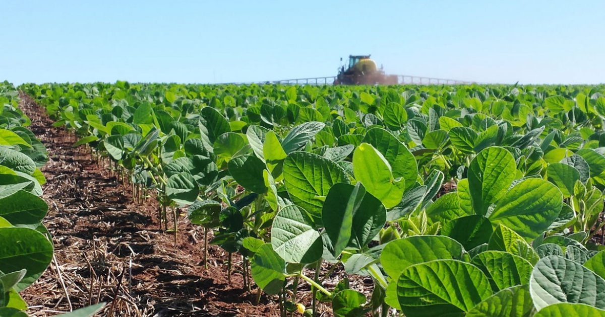

Os modelos de cultivo eficientes desempenham um papel fundamental na agricultura moderna, permitindo o uso otimizado de recursos naturais e alcançando altos níveis de produtividade. Um exemplo notável é a agricultura de precisão, que utiliza tecnologias avançadas, como sensores e sistemas de monitoramento, para realizar um manejo mais preciso das culturas. Isso inclui a aplicação controlada de fertilizantes e pesticidas, levando em consideração as necessidades específicas das plantas e minimizando o desperdício. Além disso, a agricultura vertical é outro modelo eficiente, que envolve o cultivo de plantas em ambientes fechados e em camadas verticais, otimizando o uso do espaço, da água e da luz solar. Essa abordagem pode alcançar altas taxas de produtividade e reduzir significativamente a dependência de grandes áreas de terras agrícolas.
Outro exemplo de modelo de cultivo eficiente é a agrofloresta, que integra árvores, culturas agrícolas e animais em um mesmo sistema. Nesse modelo, as árvores fornecem sombra, proteção contra ventos e ajudam a melhorar a qualidade do solo, enquanto as culturas agrícolas são plantadas entre as árvores. Esse sistema diversificado maximiza o uso do espaço e promove interações positivas entre os componentes, resultando em um aumento da produtividade e uma redução da necessidade de insumos externos, como fertilizantes e pesticidas.
Esses exemplos de modelos de cultivo eficientes demonstram como a combinação de técnicas avançadas, como a agricultura de precisão e a agricultura vertical, juntamente com abordagens tradicionais, como agrofloresta e agricultura de conservação, podem melhorar a eficiência do uso de recursos e aumentar a produtividade agrícola. Ao adotar esses modelos, os agricultores podem enfrentar os desafios do crescimento populacional, garantindo a segurança alimentar e a sustentabilidade dos sistemas agrícolas.
Gabriel Ortiz Oliva Gil RM: 98642
Vinicius Rossin Guzella RM: 98337
Arthur Mitsuo Yamamoto RM: 551283
Ramon Cezarino Lopez RM: 551279
Kaio Cumpian Silva RM: 98816